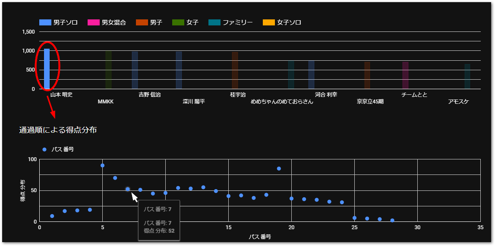

淡海ロゲイニング2024リザルト
3時間の部の結果、5時間の部の結果ページでは、次図のとおりバーグラフで各選手、チームの総合得点が一覧されています。バーの部分をクリック、またはタップすると、その選手の通過順の得点をプロットするグラフを表示します。ドットにカーソルを合わせると、順番と得点がポップアップ表示されます。地図とともにご覧ください。

3時間の部の結果
5時間の部の結果
滋賀県オリエンテーリング協会事務局お問い合わせ先
orienteering.shiga.contact@gmail.com